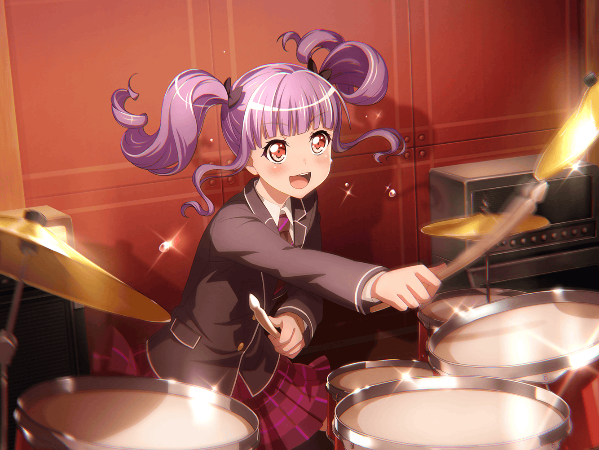

あこ
暗黒の炎を纏う舞台に闇の力が増殖し、
我らの……えっと、こう……結束力的な何かが……
あこ
う～ん、なかなかいいキメ台詞が思いつかないな～。
あとでりんりんに相談して……
あこ
あっ、友希那さん！
友希那
あこ……？
あこ
おはようございますっ
これからスタジオですよね？
よかったら一緒に行きませんか？
友希那
ええ、構わないわよ
あこ
ありがとうございます！
あこ
（えへへ、朝から友希那さんと一緒なんてついてるな～♪）
あこ
（それに……）
友希那
なんだか楽しそうね
あこ
はい！
友希那さんと一緒にスタジオ行けるのも嬉しいですし、
この間のライブも、すっごく楽しかったなって！
あこ
特にラストの曲！
こう……バッバーンッ！ って感じで、
すっごくキマってました！
友希那
そういえば……
あこ達は、お父さ……父のあの曲を聴いた瞬間から、
かなりやる気を出してくれていたわね
あこ
もちろんです！
あこ
あの曲を聴いた時、あこ、ビビビっ! てきたんです。
なんてカッコイイ曲なんだろうって！
あこ
友希那さんが歌ったら
絶対にもっとカッコよくなるって思いました！
あこ
それにそれに、なんかこうウズウズしてきて……
気づいたら、自分だったらこうする！ って思って、
ドラムを叩いてたんです！
友希那
あの時のあこは、本当に楽しそうにドラムを叩いていたわね
あこ
はいっ！
りんりんも一緒にキーボードを弾いてくれて、
この曲を演りたい！ って気持ちがもーっと強くなりました！
あこ
あの時はライブで演れるって思ってたけど……
友希那さんがセットリストに入れるって言ってくれなくて、
どうしてなんだろう？ って考えたんです
あこ
もしかしたら、あこ達のレベルがまだまだだから、
友希那さんは演れないって思ってるのかなって……
あこ
だから、りんりんと相談して、いーっぱい練習したんです！
友希那
そう……
友希那
（ただ自分が未熟だからという理由で迷っていたけど……
あこ達に余計な心配をかけてしまっていたのね）
友希那
勘違いをさせてしまって、ごめんなさい。
あこ達のせいではないの
あこ
へっ！？
あこ
えっと、あの、その……あ、謝らないでください！
今はちゃーんと分かってますから！！
あこ
それにあこ、すっごく嬉しかったんです
友希那
嬉しかった……？
あこ
はいっ！
友希那さん、あこ達……みんなにお願いしてくれましたよね？
『あの曲を演るために協力してほしい』って
あこ
あこにとって友希那さんは憧れの存在で、
スーパーカッコイイ人なんです！
あこ
だから、少しでも
友希那さんの力になりたいって思ってるから……
あこ
友希那さんが頼ってくれて……
あこ達に想いを話してくれて、嬉しかったんです！
友希那
あこ……
友希那
そんな風に思っていてくれたのね。
知らなかったわ
あこ
えへへ、あこは友希那さんの大大だ～いファンですから！
あこ
はあぁぁぁー……
あの曲を歌っていた友希那さん、カッコよかったなぁ……
友希那
そう……？
あこ
はいっ！
ライブの後、りんりんとも話してたんです
あこ
友希那さんがまたあの曲を歌うところを見たい。
今度はあの時以上の一体感で演奏したいねって！
友希那
そうね。
次もあの時の……
友希那
いえ、あの時以上のものを演れたらって思う。
そのためには、あなた達の力が必要よ
あこ
あこ達の力が必要……！
ホントですか！？
友希那
ええ
あこ
それじゃあそれじゃあ、
あこ、少しでも友希那さんの力になれてるってことですか！？
友希那
え、ええ……
友希那
あこだけじゃない。
Roseliaのみんなが、私を……私の歌声を支えてくれているわ
友希那
これからも、よろしくね
あこ
！！
は、はいっ！！
あこ
ううー……どうしよう、どうしようっ！！
ホント嬉しすぎるー！！
あこ
よーし！ 今日の練習も頑張るぞー！！